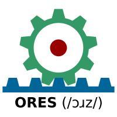

{{short description|Capital and the largest city of South Sudan}} {{about|the capital of South Sudan}} {{Lead too short|date=September 2020}} {{Use dmy dates|date=November 2013}} {{Infobox settlement | settlement_type = Capital | official_name = Juba | nickname = | image_flag = Flag of Juba.gif | image_skyline = {{Photomontage|position=center |photo1a =JUBA VIEW.jpg |photo2a =John Garang Mausoleum Square in Juba.JPG |photo2b =Juba Sudan aerial view.jpg |photo3a =United Nations (UTair) Boeing 737-500-1.jpg |photo3b =Juba, capital de Sudan del Sud.jpg |photo4a = |photo4b = |size = 270 |spacing = 1 |color = #FFFFFF |border = 1 }} | image_caption = Photos of Juba | imagesize = 270px | image_seal = | image_map = | mapsize = | pushpin_map = South Sudan | pushpin_label = Juba | pushpin_map_caption = Location of Juba in South Sudan | subdivision_type = Country | subdivision_name = {{flag|South Sudan}} | subdivision_type1 = [[States of South Sudan|State]] | subdivision_name1 = [[Central Equatoria]] | subdivision_type2 = [[Counties of South Sudan|County]] | subdivision_name2 = [[Juba County|Juba]] | subdivision_type3 = [[Payam (administrative division)|Payam]] | subdivision_name3 = Juba | government_type = [[Mayor-council government]] | leader_title = Mayor | leader_name = Stephen Wani Michael | established_title = Founded | established_date = 1922 | area_magnitude = | area_total_km2 = 52 | area_land_km2 = | area_metro_km2 = 336 | population_as_of = 2017 estimate | population_urban = | population_note = | population_density_km2 = auto | population_total = 525953 | population_metro = | timezone = [[Central Africa Time|CAT]] | utc_offset = +2 | coordinates = {{coord|4|51|N|31|36|E|region:SS|display=inline,title}} | elevation_m = 550 | latitude = | longitude = | blank_name = [[Köppen climate classification|Climate]] | blank_info = [[Tropical savanna climate|Aw]] | website = | footnotes = }} [[File:Sudan Juba Hotel 1936.jpg|thumb|Juba Hotel in 1936]] '''Juba''' {{IPAc-en|ˈ|dʒ|uː|b|ə}}<ref>{{cite web|url=http://dictionary.reference.com/browse/Juba|title=Define Juba: ''noun'' 2. a city in South Sudan on the White Nile.|publisher=Dictionary.com|access-date=27 October 2013}}</ref> is the [[Capital city|capital]] and largest city of [[South Sudan]]. The city is situated on the [[White Nile]] and also serves as the capital of the [[Central Equatoria|Central Equatoria State]]. It is the world's newest capital city, and had a population of 525,953 in 2017. It has an area of {{Convert|52|sqkm|sqmi|abbr=on}}, with the metropolitan area covering {{Convert|336|sqkm|sqmi|abbr=on}}. Juba was established in 1920–21 by the [[Church Missionary Society]] (CMS) in a small [[Bari people|Bari]] village, also called Juba. The city was made as the capital of [[Mongalla Province]] in the late 1920s. The growth of the town accelerated following the signing of the [[Comprehensive Peace Agreement]] in 2005,<ref name=\":1\">{{Cite web|last=Martin and Irina Mosel|first=Ellen|date=January 2011|title=City limits: urbanisation and vulnerability in Sudan|url=https://www.odi.org/sites/odi.org.uk/files/odi-assets/publications-opinion-files/6511.pdf|access-date=2020-10-22|website=Overseas Department Institute}}</ref> which made Juba the capital of the [[Autonomous Government of Southern Sudan]]. Juba became the capital of South Sudan in 2011 after its [[independence]], but influential parties wanted [[Ramciel]] to be the capital. The government announced the move of the capital to Ramciel, but is yet to occur. ==History== [[File:Equatoria TOWER.jpg|thumb|Equatoria Tower]] {{Quote box | width = 25em | align = left | bgcolor = #B0C4DE | title = Historical Affiliations | class = plainlist | fontsize = 90% | quote = {{flagicon image|Flag of Anglo-Egyptian Sudan.svg}} [[Anglo-Egyptian Sudan]] 1922–1956 * {{flagicon|Sudan|1956}} [[History of Sudan (1956–69)|Republic of the Sudan]] 1956–1969 * {{flagicon|Sudan}} [[History of Sudan (1969–85)|Democratic Republic of the Sudan]] 1969–1985 * {{flagicon|Sudan}} [[Sudan|Republic of the Sudan]] 1985–2011 * {{flagicon|South Sudan}} [[Republic of South Sudan]] 2011–present }} Under the [[Khedivate of Egypt]], Juba served as the southernmost garrison of the Egyptian army, quartering only a handful of soldiers. Disease was common; soldiers often fell ill due to the [[malaria]], [[meningitis]] and [[blackwater fever]] that was prevalent in the region. Explorers and campaigners [[Samuel Baker|(Sir) Samuel]] and [[Florence Baker]] used the nearby island of [[Gondokoro]] as a base during their expeditions to what is now [[South Sudan]] and northern [[Uganda]] from 1863 to 1865 and 1871 to 1873.<ref name=\"ReferenceA\">To The Heart of the Nile: Lady Florence Baker and the Exploration of Central Africa, by Pat Shipman</ref> The present city of Juba was established on the site of a small [[Bari people|Bari]] village, <!--of 36 families (of the Bekat clan)--> also called Juba,<ref>{{cite journal|last=Richardson|first=J.N.|date=1933|title=Bari Notes|journal=Sudan Notes & Records|volume=16|issue=2|pages=181–186}}</ref> where the [[Church Missionary Society]] (CMS) had established a mission and the Nugent Memorial Intermediate School in 1920–21.<ref>{{cite web|url=http://www.ampltd.co.uk/digital_guides/church_missionary_society_archive_general/editorial%20introduction%20by%20rosemary%20keen.aspx|title=Church Missionary Society Archive, General Introduction and Guide to the Archive|last=Keen|first=Rosemary|date=n.d.|website=ampltd.co.uk|publisher=Adam Matthew Publications, Pelham House|access-date=December 16, 2016}}</ref><ref>{{cite book|title=Equatorial province handbook|last=Nalder|first=Leonard F.|date=1936|publisher=Anglo-Egyptian Sudan government memoranda|oclc=3450641}}</ref><ref>{{cite book|title=Day of devastation, day of contentment: the history of the Sudanese church across 2000 years Volume 10 of Faith in Sudan|last=Werner|first=Roland|date=2000|publisher=Paulines Publications Africa|isbn=9966215298|display-authors=etal}}</ref> In the late 1920s, [[Anglo-Egyptian Sudan|Anglo-Egyptian officials]] ordered Bari residents to relocate so that a new town could be constructed to serve as the capital of [[Mongalla, South Sudan|Mongalla Province]].<ref name=\"Badiey 2014 38\">{{cite book|title=The State of Post-conflict Reconstruction: Land, Urban Development and State Building in Juba, Southern Sudan|last=Badiey|first=Naseem|date=2014|publisher=Boydell & Brewer Ltd|page=38}}</ref> The site was chosen by Anglo-Egyptian officials partly because of the presence of the CMS Nugent Memorial Intermediate School there, and partly because its proximity to river transportation on the Nile.<ref>{{cite journal|last=Shuichiro|first=Nakao|date=2013|title=A History from Below: Malakia in Juba, South Sudan, c. 1927-1954|journal=The Journal of Sophia Asian Studies|volume=31|pages=139–160}}</ref><ref>{{cite web |url= https://jubainthemaking.com/to-the-juba-wharf/|title= To the Juba Wharf|author=Brendan Tuttle |date= 2021|website= Juba in the Making |publisher= Juba in the Making|access-date= July 19, 2021|quote=}}</ref> Major construction of the new city of Juba was underway by 1927.<ref name=\"Badiey 2014 38\" /> Traders from Rejaf relocated to the new city in 1929, and the Governor's office of Mongalla was moved there in 1930.<ref>{{cite journal|last=Shuichiro|first=Nakao|date=2013|title=A History from Below: Malakia in Juba, South Sudan, c. 1927-1954|journal=The Journal of Sophia Asian Studies|volume=31|pages=139–160}}</ref><ref>{{cite web |url= https://jubainthemaking.com/|title= Juba in the Making|author=<!--Not stated--> |date= |website= jubainthemaking.com|publisher= L’Humanité, Le Monde Afrique, & Internazionale |access-date= |quote=}}</ref> Greek merchants supplying the British Army played an early and central role in the establishment of Juba in the early 1920s.<ref>{{cite journal|last=Shuichiro|first=Nakao|date=2013|title=A History from Below: Malakia in Juba, South Sudan, c. 1927-1954|journal=The Journal of Sophia Asian Studies|volume=31|pages=139–160}}</ref> Their number never exceeded 2,000, but because of their excellent relationship with the native Bari people and the large amount of resulting assistance they received, they built many structures in the downtown Juba Market area as well as in the area which the contemporary British soldiers called the Greek Quarter, today the small suburb of Hai Jalaba. Many of these structures are still standing today. Public buildings such as the Ivory Bank, Notos Lounge, the old Sudan Airways Building, Paradise Hotel, and the Nile Commercial Bank and Buffalo Commercial Bank were all built by Greeks. Greek merchants were responsible for the construction of the Central Bank building in the mid 1940s, as well as the Juba Hotel in the mid 1930s.<ref>Greek Community of Juba Archives</ref> Until 1956, Juba was in [[Anglo-Egyptian Sudan]], which was jointly administered by the United Kingdom and the [[Kingdom of Egypt]]. British hopes to join the southern part of Sudan with [[Uganda]] were dashed in 1947 during the [[Juba Conference]], which resulted in an agreement to unify northern and southern Sudan.<ref>Britannica, [https://www.britannica.com/place/Juba Juba], britannica.com, USA, accessed on July 7, 2019</ref> In 1955, a mutiny of southern soldiers in [[Torit]] sparked the [[First Sudanese Civil War]], which did not end until 1972. During the [[Second Sudanese Civil War]], Juba was a strategic location that was the focus of much fighting.{{citation needed|date=June 2012}} In 2005, Juba became the interim seat and the capital of the [[Autonomous Government of Southern Sudan]] after the signing of the [[Comprehensive Peace Agreement]] (before the agreement, [[Rumbek]] had been the proposed interim capital). With the advent of peace, the United Nations increased its presence in Juba, shifting its management of operations in [[Southern Sudan]] from its previous location in [[Kenya]]. Under the leadership of the United Nations [[OCHA|Office for the Coordination of Humanitarian Affairs]], the United Nations established a camp known as \"OCHA Camp\", which served as a base for many United Nations agencies and non-governmental organizations. {{citation needed|date=June 2012}} Juba became the world's newest national capital on 9 July 2011, when South Sudan formally declared its independence from the [[Republic of the Sudan]]. However, influential parties including the South Sudanese government expressed dissatisfaction with the city's suitability as a national capital, and the government proposed that a new [[planned city]] be built as a replacement capital elsewhere, most likely [[Ramciel]] in [[Lakes (state)|Lakes]].<ref name=\"rnw\">{{cite news|url=http://www.rnw.nl/africa/article/new-capital-city-south-sudan|title=New capital city for South Sudan?|date=6 February 2011|access-date=24 July 2011|url-status=dead|archive-url=https://web.archive.org/web/20120629133501/http://www.rnw.nl/africa/article/new-capital-city-south-sudan|archive-date=29 June 2012|agency=Radio Netherlands}}</ref> On 5 September 2011, the government announced the capital of South Sudan would move some 250 km away from Juba to Ramciel, which is located in the middle of South Sudan, about 60 km from [[Yirol West County]], [[Lakes (state)|Lakes State]]. As of June 2020, the move has yet to occur. ==Government== Juba is led by a [[city council]] headed by Mayor Stephen Wani Michael.<ref>{{cite news|url=http://www.talkofjuba.com/2017/11/17/kiir-makes-changes-in-civil-aviation-authority-appoints-ceo/|title=Kiir makes changes in Civil Aviation Authority, appoints CEO|date=17 November 2017|access-date=22 November 2017}}</ref> This post-independence council was formed in March 2011 and Baballa appointed to lead it by Governor [[Clement Wani Konga]]. Former Yei County Commissioner [[David Lokonga Moses]] was appointed as deputy mayor. A ministerial committee to keep Juba clean and sanitary was also created by gubernatorial decree at the same time.<ref name=\"jubatown\">{{cite news|url=http://www.gurtong.net/ECM/Editorial/tabid/124/ctl/ArticleView/mid/519/articleId/5065/CES-Governor-Appoints-Juba-Town-Mayor.aspx|title=CES Governor Appoints Mayor For Juba City Council|last=Stephen|first=Juma John|date=3 April 2011|access-date=28 July 2011|agency=Gurtong}}</ref> Prior to March 2011, the area now administered by Juba City Council was divided into Juba, Kator, and Muniki ''payams''. It is now a standalone subdivision of [[Juba County]],<ref name=\"jubatown\" /> of which it is the county seat.<ref>{{cite web|url=http://www.nilebuffalo.com/resource_detail.php?countryID=1|title=Central Equatoria State|year=2008|publisher=NileBuffalo Gazette|url-status=dead|archive-url=https://web.archive.org/web/20110320051711/http://www.nilebuffalo.com/resource_detail.php?countryID=1|archive-date=20 March 2011|access-date=28 July 2011}}</ref> ==Transportation== [[File:Sudan Juba bridge.jpg|thumb|Juba Bridge, a [[Bailey bridge]] over the [[White Nile]]]] The city is a river port and the southern terminus of traffic along the [[Nile]], properly called the ''Bahr al Jabal'' section of the [[White Nile]]. Before the civil war, Juba was also a transport hub, with highways connecting it to [[Kenya]], [[Uganda]] and the [[Democratic Republic of the Congo]]. After the war, Juba has no longer been a significant trade city. Roads and the river harbour are not in use due to disrepair. The United Nations and the [[Government of South Sudan|South Sudanese government]] are repairing the roads, but full repair is expected to take many years. In 2003, the [[Swiss Foundation for Mine Action]] (FSD) started to clear the roads leading from Juba to Uganda and Kenya. It was expected that these roads would be completely de-mined and rebuilt in the course of 2006–2008. {{Citation needed|date=February 2012}} The rebuilding of the roads, which are mostly unpaved, takes a tremendous amount of effort and time because of the limited work season due to the lengthy rainy season, which lasts from March until October. The roads are important for the peace process in Sudan as people need them to return to their homes and to regain what they feel is a normal life. The first road that has started to be rebuilt is the road to Uganda. This road is particularly important, as many of the original inhabitants of Juba fled to Uganda during the war. {{As of|2009}}, there are three paved roads in Juba, one that was re-surfaced in July. The main one is a concrete road, built by the British in the 1950s. {{Citation needed|date=February 2012}} Between 2008 and 2011, the [[Government of Uganda|Ugandan government]] and the [[Southern Sudan autonomous region (2005–2011)|South Sudanese government]] undertook joint efforts to develop a railway link between the [[Northern Region, Uganda|Northern Ugandan]] city of [[Gulu]] and Juba, with an extension to [[Wau, Sudan|Wau]]. A memorandum of understanding between the two governments was signed to that effect in August 2008.<ref>{{cite web|url=http://www.pachodo.org/20080908783/Pachodo.org-English-Articles/gulu-nimule-juba-wau-railway-line-in-offing.html|title=Gulu – Juba Railway in the Offing|date=20 September 2010|publisher=Pachodo.org|url-status=dead|archive-url=https://web.archive.org/web/20111007041738/http://www.pachodo.org/20080908783/Pachodo.org-English-Articles/gulu-nimule-juba-wau-railway-line-in-offing.html|archive-date=7 October 2011|access-date=20 June 2012}}</ref> The same memorandum outlined plans to develop the road network between the two countries. Recent media reports from the region suggest that the railway link from Juba may link directly with Kenya, bypassing Uganda.<ref>{{cite web|url=http://www.eturbonews.com/18517/railway-link-juba-may-go-directly-kenya|title=Railway Link From Juba May Go Directly To Kenya|last=Thome|first=Wolfgang H.|date=14 September 2010|publisher=Eturbonews.com|access-date=20 June 2012}}</ref> [[Juba International Airport]] {{Airport codes|JUB|HSSJ}} is the site of large numbers of flights bringing UN and NGO (non-governmental organization) aid into Southern Sudan, as well as passengers and general air freight. The airport is very busy, among the busiest in East Africa.{{Citation needed|date=February 2011}} The construction of a new terminal was begun in late 2007 when the oil prices were very high ($100+). Since then, with the oil prices going back down, the fate of the new terminal is uncertain. Building on the new terminal restarted in early 2014 {{Citation needed|date=February 2011}} As of February 2014, there are daily flights to [[Jomo Kenyatta International Airport]] in [[Nairobi, Kenya]]; [[Khartoum International Airport]] in Sudan; [[Entebbe International Airport]] in [[Entebbe]], [[Uganda]]; and [[Bole International Airport]] in [[Addis Ababa]], Ethiopia. The [[United Nations Mission in South Sudan]] (UNMISS) has a large compound near the Juba Airport. ==Demography== In 2005, Juba's population was 163,442. Based on analysis of aerial photos, the best estimate of several donors working in Juba calculated the 2006 population at approximately 250,000. The 5th Sudan Population and Housing Census took place in April/May 2008, stating the population of [[Juba County]] to be 372,413 (the majority residing in Juba City, which dominates the [[counties of South Sudan|county]]), but the results were rejected by the [[Autonomous Government of Southern Sudan]].<ref>{{cite news|url=http://www.sudantribune.com/spip.php?article31746|title=South Sudan parliament throw outs census results|author=Isaac Vuni|date=8 July 2009|publisher=Sudan Tribune}}</ref> Juba is developing very rapidly due to oil money and the Chinese coming for work and development. {{Citation needed|date=November 2012}} In 2011, the population of the city of Juba is estimated at approximately 372,410, but may potentially be more.<ref>{{cite web|url=http://www.wolframalpha.com/input/?i=Juba&lk=1&a=ClashPrefs_*City.*Juba.CentralEquatoria.Sudan--|title=Estimated Population in 2011|publisher=Wolframalpha.com|access-date=20 June 2012}}</ref> {{As of|2013}}, the city's population was growing at a rate of 4.23%.<ref name=\"The World Factbook: South Sudan\">{{cite web|url=https://www.cia.gov/the-world-factbook/countries/south-sudan/|title=The World Factbook: South Sudan|work=[[World Factbook]]|publisher=[[Central Intelligence Agency]]|access-date=2013-12-31}}</ref> {| class=\"wikitable\" |- ! Year!! Population !! |- | 1973 (census) || style=\"text-align:right;\" | 56,740|| |- | 1983 (census) || style=\"text-align:right;\" | 83,790|| |- | 1993 (census) || style=\"text-align:right;\" | 114,980|| |- | 2005 (estimate) || style=\"text-align:right;\" | 163,440|| |- | 2006 (estimate) || style=\"text-align:right;\" | 250,000||<ref>{{cite web|url=http://www.tripwiser.com/trip_destination-Juba_Sudan?itiNodeId=8a8c80fe18ab78760118ac5f68cd2290&eType=site|title=Estimated Population in 2006|publisher=Tripwiser.com|access-date=20 June 2012}}</ref> |- | 2008 (estimate) || style=\"text-align:right;\" | 250,000||<ref name=\"The World Factbook: South Sudan\" /> |- | 2011 (estimate) || style=\"text-align:right;\" | 372,410|| |- | 2014 (estimate) || style=\"text-align:right;\" | 492,970|| |} ==Economy== Juba has been described as undergoing an economic boom, especially in the past five years and since independence. {{citation needed|date=November 2013}} The prospect of an economic boom has brought thousands of merchants to Juba, mostly from northern Sudan and from East Africa. {{as of|October 2010}}, several regional and international businesses have established a presence in Juba. The [[Commercial Bank of Ethiopia]] and the Kenyan banking conglomerate [[KCB Group|Kenya Commercial Bank]] has its South Sudanese headquarters in the city and a branch network of eleven (11) branches throughout South Sudan.<ref>{{cite web|url=http://www.kcbbankgroup.com/su/index.php?option=com_content&task=view&id=1&Itemid=1|title=About KCB Southern Sudan|date=4 March 2008|publisher=Kcbbankgroup.com|access-date=20 June 2012|archive-url=https://web.archive.org/web/20120320194732/http://www.kcbbankgroup.com/su/index.php?option=com_content&task=view&id=1&Itemid=1|archive-date=20 March 2012|url-status=dead}}</ref> The three indigenous South Sudanese commercial banks namely; [[Buffalo Commercial Bank]], [[Ivory Bank]] and [[Nile Commercial Bank]], all maintain their headquarters in Juba. [[Equity Bank Group|Equity Bank]], another regional finance services provider also has a branch in Juba. [[National Insurance Corporation]] (NIC), the leading Ugandan insurance services provider, maintains an office in the city.<ref>[http://www.nic.co.ug/pg.php?Id=6&p=media&s=news NIC Expands Into Sudan] {{webarchive|url=https://web.archive.org/web/20090516032406/http://www.nic.co.ug/pg.php?Id=6&p=media&s=news|date=16 May 2009}}</ref> Despite recent economic difficulties brought about by the [[South Sudanese Civil War|December 15th 2013 civil war]], Juba has continued to grow and construction is still booming. This is probably due to the high demand for affordable housing and hotel accommodations. Research from the [[Overseas Development Institute]] found that markets in Juba are transient, as many traders only come to make a quick profit and so do not invest in storage facilities or shops.<ref>Irina Mosel and Emily Henderson (2015) [http://www.odi.org/publications/10000-markets-crises-south-sudan-case-study Markets in crises: South Sudan case study] London: Overseas Development Institute</ref> == Education == The [[University of Juba]] was founded in 1975.<ref>Britannica, [https://www.britannica.com/place/Juba Juba], britannica.com, USA, accessed on July 7, 2019</ref> The Juba Public Peace Library was founded in October 1, 2019.<ref>{{Cite web|title=The Christian Times - First public library opens in South Sudan, advocates for peace|url=http://www.thechristiantimes.net/index.php/s-sudan/19-education/2434-first-public-library-opens-in-south-sudan-advocates-for-peace|access-date=2019-11-11|website=www.thechristiantimes.net}}</ref><ref name=\":0\">{{Cite web|title=Instilling a culture of reading; South Sudan looks forward to new public library|url=https://audioboom.com/posts/7327847-instilling-a-culture-of-reading-south-sudan-looks-forward-to-new-public-library|access-date=2019-11-11|website=Audioboom|language=en}}</ref> The library was donated by The South Sudan Library Foundation and contains over 13,000 books. It is the first public library of South Sudan. The South Sudan Library Foundation was co-founded by Yawusa Kintha and Kevin Lenahan.<ref name=\":0\" /><ref>{{Cite web|url=https://sydney.edu.au/business/news-and-events/news/2019/02/07/mba-student-establishes-ngo-to-improve-literacy-in-south-sudan.html|title=MBA student establishes NGO to improve literacy in South Sudan|website=The University of Sydney|language=en-AU|access-date=2019-11-11}}</ref> == Places of worship == Among the [[places of worship]], they are predominantly [[Christianity|Christian]] churches and temples : [[Roman Catholic Archdiocese of Juba]] ([[Catholic Church]]), [[Province of the Episcopal Church of South Sudan]] ([[Anglican Communion]]), [[Baptist Convention of South Sudan]] ([[Baptist World Alliance]]), [[Presbyterian Church in Sudan]] ([[World Communion of Reformed Churches]]).<ref>Britannica, [https://www.britannica.com/place/South-Sudan South Sudan], britannica.com, USA, accessed on September 8, 2019</ref> There are also [[Islam|Muslim]] mosques. ==Climate== Juba has a [[tropical wet and dry climate]] ([[Köppen climate classification|Köppen]]: Aw),<ref name=\"Climate-Data.org\">{{cite web|url=http://en.climate-data.org/location/1254/|title=Climate: Juba – Climate graph, Temperature graph, Climate table|publisher=Climate-Data.org|access-date=27 October 2013}}</ref> and as it lies near the equator, temperatures are hot year-round. However, little rain falls from November to March, which is also the time of the year with the hottest maximum temperatures, reaching {{convert|38|°C}} in February. From April to October, more than {{convert|100|mm}} of rain falls per month. The annual total precipitation is nearly {{convert|1000|mm|abbr=on}}. {{Weather box |location = Juba (1971–2000, extremes 1931–1990) |metric first = y |single line = y |Jan record high C = 42.2 |Feb record high C = 43.0 |Mar record high C = 43.6 |Apr record high C = 42.4 |May record high C = 43.7 |Jun record high C = 38.5 |Jul record high C = 37.0 |Aug record high C = 38.5 |Sep record high C = 39.0 |Oct record high C = 39.6 |Nov record high C = 40.4 |Dec record high C = 42.8 |Jan high C = 36.8 |Feb high C = 37.9 |Mar high C = 37.7 |Apr high C = 35.4 |May high C = 33.5 |Jun high C = 32.4 |Jul high C = 31.1 |Aug high C = 31.6 |Sep high C = 33.1 |Oct high C = 34.0 |Nov high C = 34.7 |Dec high C = 35.9 |year high C = 34.5 |Jan mean C=28.2 |Feb mean C=29.3 |Mar mean C=29.9 |Apr mean C=28.7 |May mean C=27.6 |Jun mean C=26.5 |Jul mean C=25.6 |Aug mean C=25.5 |Sep mean C=26.4 |Oct mean C=26.9 |Nov mean C=27.4 |Dec mean C=27.5 |Jan low C = 20.1 |Feb low C = 21.7 |Mar low C = 23.6 |Apr low C = 23.4 |May low C = 22.6 |Jun low C = 21.9 |Jul low C = 21.1 |Aug low C = 21.0 |Sep low C = 21.1 |Oct low C = 21.3 |Nov low C = 20.9 |Dec low C = 20.0 |year low C = 21.6 |Jan record low C = 11.4 |Feb record low C = 12.2 |Mar record low C = 16.3 |Apr record low C = 16.5 |May record low C = 16.8 |Jun record low C = 14.0 |Jul record low C = 13.3 |Aug record low C = 16.0 |Sep record low C = 15.5 |Oct record low C = 14.0 |Nov record low C = 13.2 |Dec record low C = 13.9 |rain colour=green |Jan rain mm = 5.1 |Feb rain mm = 11.0 |Mar rain mm = 36.7 |Apr rain mm = 111.5 |May rain mm = 129.9 |Jun rain mm = 117.8 |Jul rain mm = 144.7 |Aug rain mm = 127.5 |Sep rain mm = 103.7 |Oct rain mm = 114.5 |Nov rain mm = 43.1 |Dec rain mm = 8.2 |year rain mm = 953.7 |unit rain days = 0.1 mm |Jan rain days = 1.4 |Feb rain days = 2.0 |Mar rain days = 6.6 |Apr rain days = 11.6 |May rain days = 12.4 |Jun rain days = 10.3 |Jul rain days = 13.0 |Aug rain days = 11.5 |Sep rain days = 8.6 |Oct rain days = 10.4 |Nov rain days = 6.5 |Dec rain days = 1.9 |year rain days = 96.2 |Jan humidity = 44 |Feb humidity = 42 |Mar humidity = 51 |Apr humidity = 64 |May humidity = 73 |Jun humidity = 76 |Jul humidity = 81 |Aug humidity = 80 |Sep humidity = 77 |Oct humidity = 73 |Nov humidity = 69 |Dec humidity = 53 |year humidity = 65 |Jan sun = 279.0 |Feb sun = 235.2 |Mar sun = 210.8 |Apr sun = 198.0 |May sun = 207.7 |Jun sun = 207.0 |Jul sun = 182.9 |Aug sun = 204.6 |Sep sun = 228.0 |Oct sun = 241.8 |Nov sun = 237.0 |Dec sun = 260.4 |year sun = 2692.4 |Jan percentsun = 76 |Feb percentsun = 67 |Mar percentsun = 57 |Apr percentsun = 54 |May percentsun = 62 |Jun percentsun = 58 |Jul percentsun = 50 |Aug percentsun = 57 |Sep percentsun = 63 |Oct percentsun = 64 |Nov percentsun = 68 |Dec percentsun = 68 |year percentsun = 62 |source 1 = ''[[World Meteorological Organization]]'',<ref name=\"WMO\">{{cite web | url = http://worldweather.wmo.int/085/c01541.htm | title = World Weather Information Service – Juba | publisher = [[World Meteorological Organization]] (UN) | access-date = 21 March 2013}}</ref> |source 2 = ''NOAA'' (sun and humidity, 1961–1990),<ref name=\"NOAA\">{{cite web | url = ftp://ftp.atdd.noaa.gov/pub/GCOS/WMO-Normals/RA-I/SU/62941.TXT | title = Juba Climate Normals 1961–1990 | publisher = [[National Oceanic and Atmospheric Administration]] | access-date = 18 January 2016}}</ref> [[Deutscher Wetterdienst]] (extremes, mean temperatures)<ref>{{cite web | url = http://www.dwd.de/DWD/klima/beratung/ak/ak_629410_kt.pdf | title = Klimatafel von Juba / Sudan | publisher = Deutscher Wetterdienst | language = de | access-date = 3 November 2016}}</ref> |date=July 2011 }} ==Notable people== *[[Aheu Deng]], beauty queen and fashion model *[[Bangs (hip hop artist)|Bangs]], rapper and YouTube personality * Independent Moses Nunuh, first child born in [[South Sudan]] after its independence.<ref>{{cite news|url=http://www.cbc.ca/news/offbeat/story/2011/07/10/independent-baby-sudan.html|title=The First South Sudanese baby named Independent|date=10 July 2011|access-date=9 July 2012|publisher=[[CBC News]]}}</ref> In common with many other children in South Sudan, he died before his first birthday.<ref>{{cite news|url=https://www.independent.co.uk/news/world/africa/happy-birthday-south-sudan-7912244.html|title=Happy Birthday South Sudan?|author=Ros Wynne-Jones|date=7 July 2012|newspaper=[[The Independent]]|access-date=9 July 2012|quote=Independent Moses, like one in 10 babies in South Sudan, had not reached his first birthday, dying of Africa's biggest killer, diarrhoea.}}</ref> ==See also== *[[Equatoria]] **[[Eastern Equatoria]] **[[Central Equatoria]] **[[Western Equatoria]] *[[Gulu-Nimule Road]] *[[Juba Stadium]] *[[Lainya|Lainya County]] *[[Railway stations in South Sudan]] *[[Anataban Campaign]] ==References== {{reflist|30em}} ==External links== {{Wikivoyage|Juba}} {{Commons category|Juba}} * Fisher, J. 2005, [http://news.bbc.co.uk/2/hi/africa/4461663.stm 'Southern Sudan's Front-line Town'], ''BBC News'', 20 April 2005. * Holt, K. 2007, [http://news.bbc.co.uk/2/hi/in_pictures/6228705.stm 'In pictures: Juba's Street Struggle'], ''BBC News'', 4 January 2007. *[http://www.friendsoftherail.com/phpBB2/viewtopic.php?f=27&t=2946 Sudan And Uganda Sign MoU To Develop Infrastructure] *[https://web.archive.org/web/20101009035359/http://www.newvision.co.ug/D/8/220/734095 'Gulu-Juba rail link underway'] *[https://web.archive.org/web/20110921065020/http://www.mcclatchydc.com/2010/11/16/103825/worlds-newest-nation-would-start.html World's Newest Nation would Start Almost from Scratch] – article & video by ''[[The McClatchy Company|McClatchy]]'' {{List of African capitals}} {{Central Equatoria}} {{State capitals in South Sudan}} {{Authority control}} [[Category:Juba| ]] [[Category:State capitals in South Sudan]] [[Category:Capitals in Africa]] [[Category:Populated places in Jubek State]] [[Category:Populated places on the Nile]] [[Category:Populated places established in 1922]] [[Category:South Sudan-related lists|Towns in South Sudan]] [[Category:1922 establishments in Africa]]
Submit
→  →